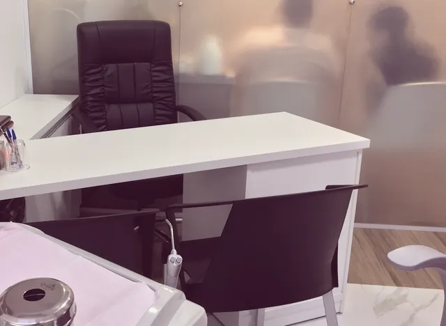
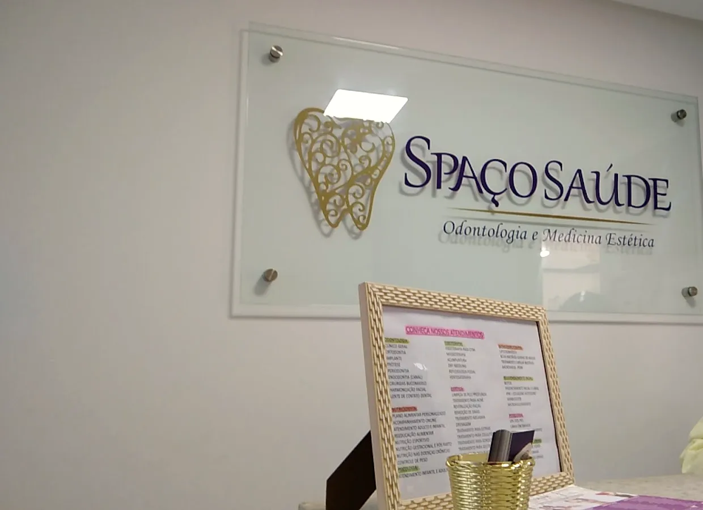
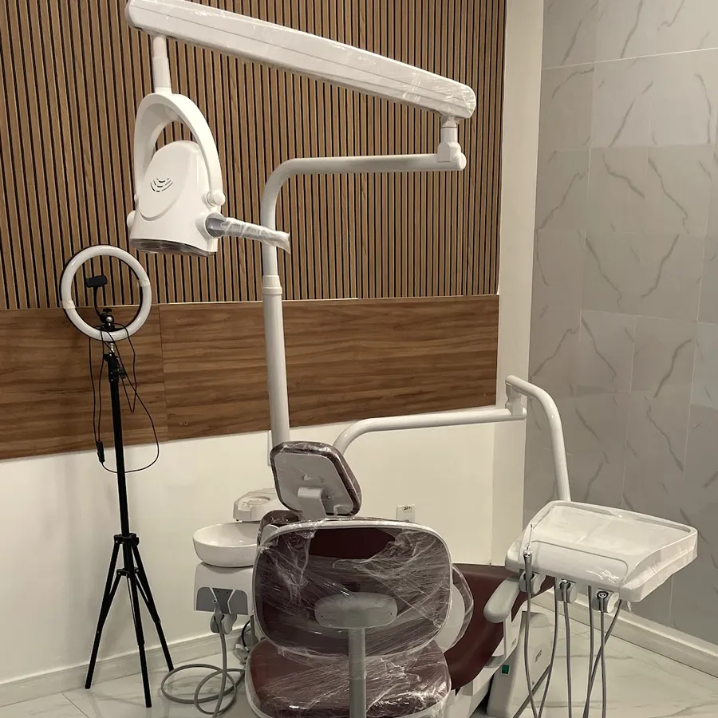
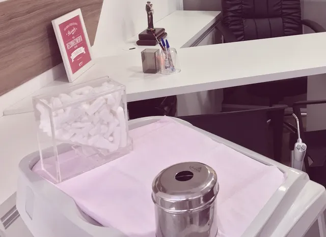
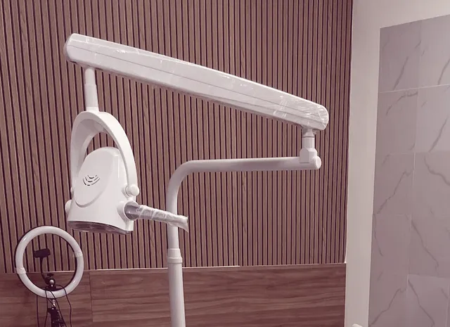
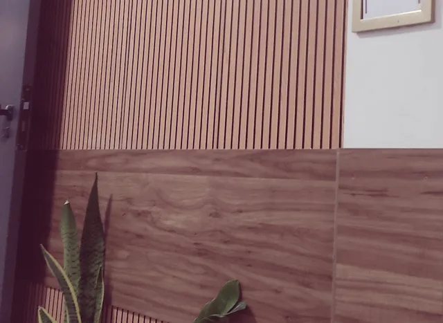
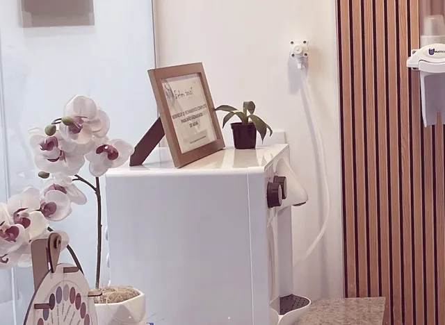
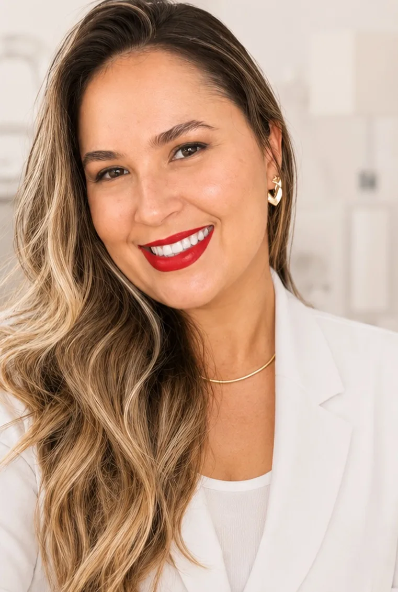

Clínico geral
Prevenção, diagnóstico e cuidados para a saúde bucal.
Saiba mais
Consulta, restauração e protocolo de prevenção de doenças bucais.
Esboço da Hórus · página privada
Ortodontia, implante dentário e tratamento de bruxismo, DTM e ATM no Centro Médico Centenário, na Graça.

Sala 205, Centro Médico CentenárioA clínica cuida da saúde bucal de forma integrativa: estética, função e bem-estar, pensando na saúde geral de cada paciente.
Agendar avaliação
Nossos tratamentos
Da prevenção ao implante, e em todos começa do mesmo jeito: uma avaliação completa é o primeiro passo.

Prevenção, diagnóstico e cuidados para a saúde bucal.
Consulta, restauração e protocolo de prevenção de doenças bucais.

Alinhamento que vai além da estética.
Quando a mordida está em equilíbrio, todo o sistema pode funcionar de forma mais harmoniosa. Em muitos casos, a ortodontia pode contribuir para reduzir a sobrecarga na ATM e prevenir desgastes e fraturas dentárias.

Não é apenas repor um dente: é mastigar com segurança.
A cirurgia é feita com anestesia e planejamento. Prótese dentária e enxerto ósseo também são feitos na clínica.

Nem sempre começa com dor. Muitas vezes, deixa pequenos sinais.
Acordar com o rosto tenso, a cabeça pesada, os dentes desgastando. E nem sempre é só estresse: dentes desalinhados e contatos inadequados na mordida podem aumentar a sobrecarga sobre músculos e articulações.

Estética do sorriso, depois da avaliação.
A clínica também faz clareamento dental, gengivoplastia e recobrimento radicular.
[FALTA: foto de cada tratamento. Por enquanto, fotos reais do consultório, da ficha do Google.]

Sua profissional
“Dra., implante dói?” Essa é uma das perguntas que mais recebo.
A cirurgia é realizada com anestesia, planejamento e todo o cuidado com o seu conforto. E, em qualquer tratamento, o primeiro passo é uma avaliação completa.
Dra. Ângela Noronha
Ortodontista, CRO-BA 12600
À frente da Spaço Saúde, com uma equipe de sete áreas
[FALTA: formação da Dra. e nome e CRO da equipe]
Acompanhe no Instagram4,9 de média em 124 avaliações
“O atendimento nessa clínica é humanizado. Vale muito a pena escolher passar pelos atendimentos odontológicos no Spaço Saúde. Só gratidão pelo cuidado e delicadeza.”
Maria D. · há 4 meses
“Atendimento excelente, desde a marcação na recepção até as consultas. Fiz um tratamento complexo com vários dentistas especialistas da clínica e todos foram super profissionais, competentes e atenciosos.”
Lilian N. · há 1 mês
“Atendimento excelente, ambiente acolhedor e profissionais altamente qualificados e atenciosos. Uma experiência extremamente positiva do início ao fim.”
Michel S. · há 10 meses
“Bom atendimento, local bem receptivo. Profissional muito boa no que faz.”
Cleidson M. · há 4 meses
No esboço, trechos reais da ficha do Google, com o nome abreviado. No site publicado, só entram avaliações com autorização do paciente (regra do CFO).
Responda três perguntas e a conversa abre no WhatsApp da clínica com a mensagem pronta.